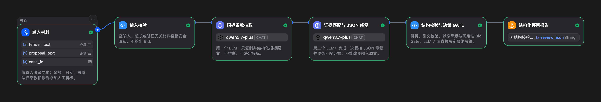

决策证据卡G10
缺少关键材料，不直接建议投标
- 证据关键同类业绩材料缺失
- 规则Critical Gap
- 建议No-Bid
- 行动补齐材料并人工复核
该结论由 Code Gate 计算，不由 LLM 自由决定。
AI 解决方案架构案例 · Synthetic POC
AI Tender Evaluator · 求职作品集
把招标条款与投标证据转化为可审计的 Bid / No-Bid 建议
我的角色：场景建模、Dify Workflow、确定性 Gate、评测与证据化
Recorded Dify API Run · Synthetic / human_review_pending · 人工最终复核
该结论由 Code Gate 计算，不由 LLM 自由决定。
A / 业务风险与交付能力
冗长材料中，资格、日期、金额、评分项与废标条件分散存在。只靠摘要无法回答三个关键问题：
B / 一个决策瞬间
以下为 Representative Synthetic Case 摘要，不含完整招标、投标文本或原始响应。
正在读取脱敏证据包…
C / 架构取舍
核心不是节点数量，而是明确谁能归纳、谁能裁决、谁承担最终责任。
抽取原文、匹配响应、标记 Met / Gap / Unclear / Conflict。
关键 Gap、证据缺失与冲突按规则进入 No-Bid 或 Conditional Bid。
资质、日期、金额、法律、报价与最终投标授权由人工负责。

D / 紧凑验证证据
所有数字仅描述本轮 Synthetic POC，不代表生产准确率或客户效果。
E / 我的贡献与可复用方法论
先把强制条款、评分项、证据和人工责任结构化，再选择模型与节点。
LLM 处理抽取与归纳；硬规则、Schema 和最终建议进入 Code Gate。
缺证据、冲突、JSON 异常和低置信结果必须安全降级并进入复核。
以合成黄金集、真实 API Run、重复 Gate 和公开脱敏包支撑案例陈述。
F / POC 边界与下一步